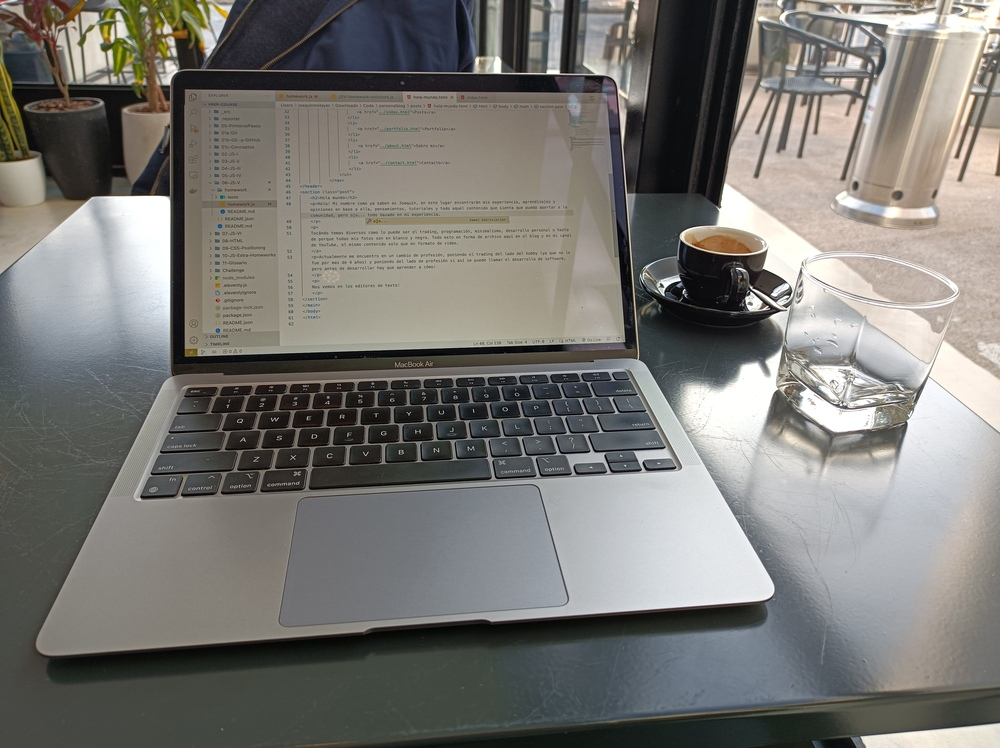

Hola mundo
Hola! Mi nombre como ya saben es Joaquín, en este lugar encontrarán mis experiencia, aprendizajes y opiniones en base a ella, pensamientos, tutoriales y todo aquel contenido que sienta que pueda aportar a la comunidad, pero ojo... todo basado en mi experiencia.
Tocándo temas diversos como lo puede ser el trading, programación, minimalismo, desarrollo personal o hasta de porque todas mis fotos son en blanco y negro. Todo esto en forma de archivo aqui en el blog y en mi canal de YouTube, el mismo contenido solo que en formato de video.
Actualmente me encuentro en un cambio de profesión, poniendo el trading del lado del hobby (ya que no lo fue por mas de 4 años) y poniendo del lado de profesión si así se puede llamar el desarrollo de software, pero antes de desarrollar hay que aprender a cómo!

Nos vemos en los editores de texto!